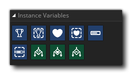

Les actions Instances Variables sont conçues pour vous aider à démarrer lors de la création d'un jeu et sont utilisées pour créer et gérer des variables d'étendue d'instance spécifiques pour score, lives et health (vous pouvez en savoir plus sur la portée variable ici ). Ces actions vont créer ces variables pour vous à tout moment où ils sont utilisés et sont destinés plus pour des raisons pratiques ou pour les débutants, et si vous avez besoin d'un contrôle plus complexe sur les valeurs de jeu que vous devriez faire vos propres variables en utilisant les actions appropriées (voir ici )
Les actions suivantes existent pour l'utilisation de ces variables d'instance:
 | Définir le score |
 | Obtenir le score |
| Définir des vies | |
| Obtenir des vies | |
 | Définir la santé |
 | Obtenir de la santé |
 | Si Score |
 | Si la vie |
 | Si la santé |